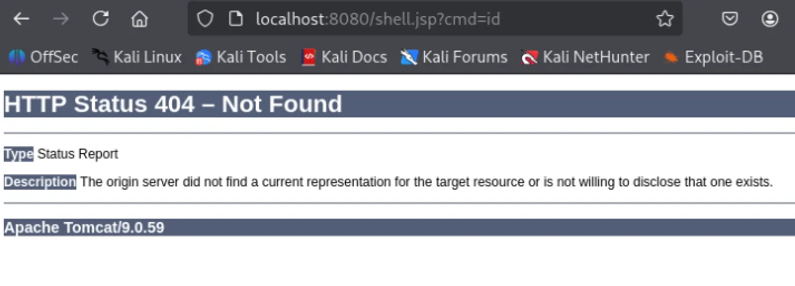
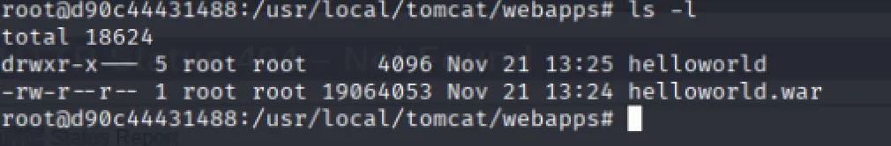
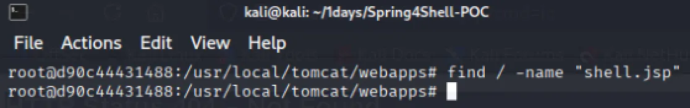

이번 주차에는 패치를 적용한 다음에
공격 재현을 시연하는 주차이다.
저번 주차와 다르게 버전을 변경하는 것이 아니라 직접 코드를 추가하여 패치를 진행해야 한다.
패치 적용
저번 주차에 이미 Spring4Shell-Patched 라는 디렉터리로 재빌드를 하여서
깃허브에서 다시 원본 디렉터리를 가져왔다.
Spring4Shell 취약점은 ClassLoader 를 변경해서 발생하는 취약점이다.
그렇기 때문에 ClassLoader 에 접근하는 것을 막으면 된다.
나는 PoC 코드를 참고해서 웹 쉘을 생성할 때 사용되는 객체 속성을
블랙리스트 방식을 사용하여 막았다.
완성된 코드는 다음과 같다.
import org.springframework.web.bind.WebDataBinder;
import org.springframework.web.bind.annotation.ControllerAdvice;
import org.springframework.web.bind.annotation.InitBinder;
@ControllerAdvice
public class Patch {
@InitBinder
public void setAllowedFields(WebDataBinder dataBinder) {
String[] denylist = new String[] {
"class.*",
"Class.*",
"*.class.*",
"*.Class.*",
"classLoader.*",
"ClassLoader.*",
"module.*",
"Module.*",
"context.*",
"Context.*",
"pipeline.*",
"Pipeline.*",
"parent.*",
"Parent.*",
"resources.*",
"Resources.*",
"pattern",
"suffix",
"directory",
"prefix",
"fileDateFormat",
};
dataBinder.setDisallowedFields(denylist);
}
}
이제 이 코드를 Patch.java 라는 이름으로 만들었고
src/main/java/com/reznok/helloworld 경로에 놓으면 된다.
그리고 나서 재빌드를 하면 패치가 된 것이다.
docker build -t spring4shell-direct-patch .
docker run -d -p 8080:8080 --name direct-patch-test spring4shell-direct-patch공격 재현
이제 재빌드가 되었으니 웹 쉘이 막히는지 살펴보겠다.
파이썬 코드를 실행시키면 지난 주차에서 패치한 것처럼
404 에러가 보인다.

도커를 사용하여 컨테이너에 접속한 다음 웹 쉘이 있는지 보겠다.
docker ps
CONTAINER ID IMAGE COMMAND CREATED STATUS PORTS NAMES
d90c44431488 spring4shell-direct-patch "catalina.sh run" 2 minutes ago Up 2 minutes 0.0.0.0:8080->8080/tcp, :::8080->8080/tcp direct-patch-test
컨테이너 이름이 direct-patch-test 이기에 다음 명령어를 사용하면 된다.
docker exec -it direct-patch-test /bin/bash
ROOT 디렉터리가 존재하지 않는 상태이다.

find 를 사용하여도 웹 쉘을 찾을 수 없다.

따라서 버전을 변경하지 않고
코드를 추가하는 방식으로 패치가 성공했다.
프로젝트 후기
기존에는 인터넷에서 어떤 취약점에 대해 설명을 보고
그 취약점을 워게임을 푸는 데만 그쳤다.
하지만 이번에 프로젝트를 통해서 실습 뿐만 아니라
패치 전후 차이, 트리거 과정에 대해서 배우며
이 취약점이 왜 취약한지 무엇을 고쳐야 할지 알 수 있었다.
이러한 방식은 설명을 보는 것보다는 오래 걸리지만
설명만 보는 것보다 훨씬 이해가 잘 되고
나의 것으로 만들기 더욱 좋았다.
이해가 안되는 취약점이라면
패치랑 트리거 과정을 통해서 이해할 수 있을 것 같다.